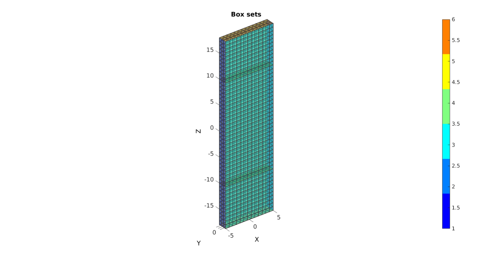
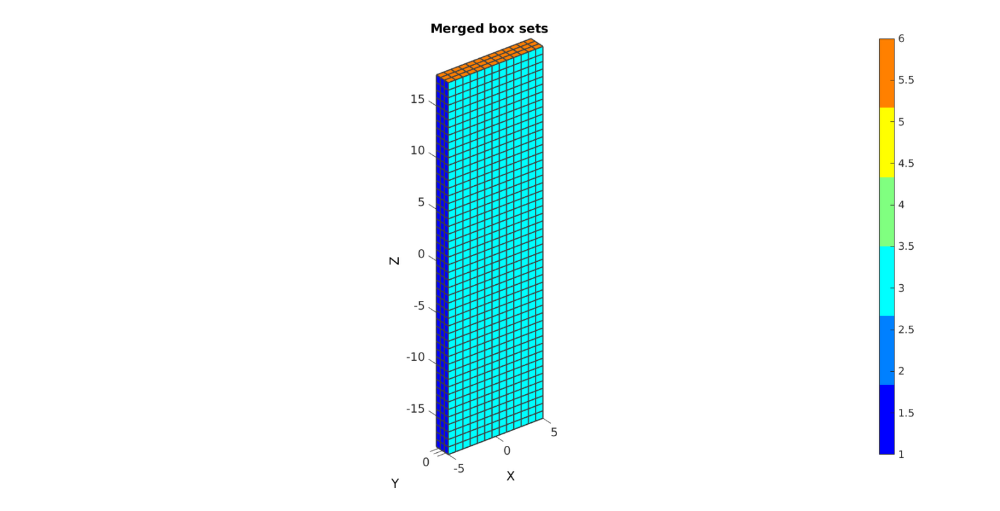
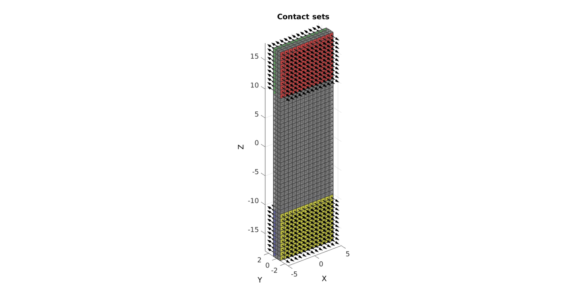
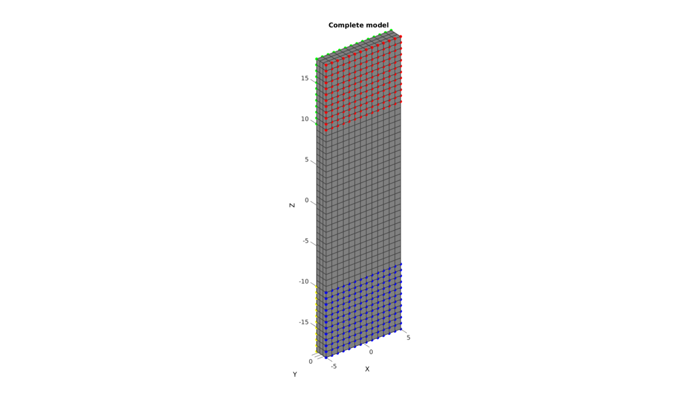
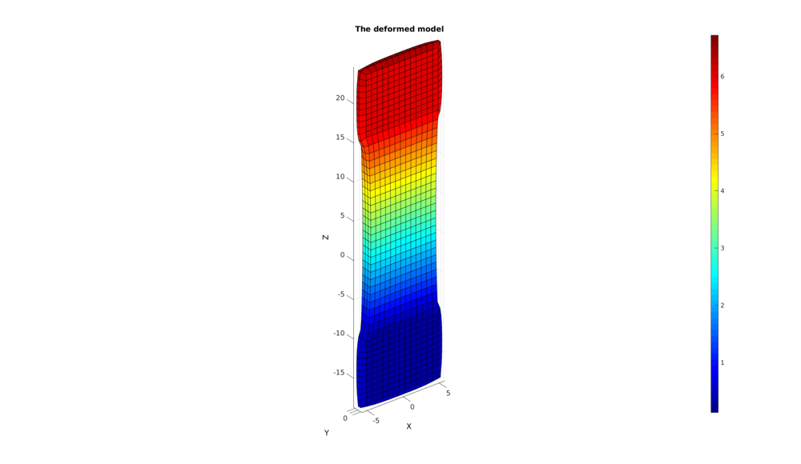

DEMO_FEBio_strip_multi_step_clamp
Below is a demonstration for: 1) The creation of an FEBio model for clamped tensile testing 2) The use of multiple steps 4) Running an FEBio job with MATLAB 5) Importing FEBio results into MATLAB
Contents
clear; close all; clc;
Plot settings
fontSize=15; faceAlpha1=0.5; faceAlpha2=1; edgeColor=0.25*ones(1,3); edgeWidth=1.5; markerSize=50;
Control parameters
% path names defaultFolder = fileparts(fileparts(mfilename('fullpath'))); savePath=fullfile(defaultFolder,'data','temp'); modelName='tempModel'; modelNameFull=fullfile(savePath,modelName); pointspacing=0.75; %Specifying dimensions and number of elements sampleWidth=10; numElementsWidth=round(sampleWidth/pointspacing); numElementsWidth=numElementsWidth+iseven(numElementsWidth); %Force uneven so there is a middle element elementSizeWidth=sampleWidth/numElementsWidth; sampleThickness=1.65; numElementsThickness=round(sampleThickness/pointspacing)+1; sampleGripGripHeight=20; numElementsGripGripHeight=round(sampleGripGripHeight/pointspacing); numElementsGripGripHeight=numElementsGripGripHeight+iseven(numElementsGripGripHeight); %Force uneven so there is a middle element sampleClampedHeight=8; numElementsClampedHeight=round(sampleClampedHeight/pointspacing); elementSizeClamped=sampleClampedHeight/numElementsClampedHeight; clampCompressiveStrain=0.375; clampCompressiveDisplacement=(sampleThickness.*clampCompressiveStrain)/2; tensileStretch=1.3; clampTensionDisplacement=(sampleGripGripHeight.*tensileStretch)-sampleGripGripHeight; %Initial material parameter set Q=0.5; c=6.115e-04; c1_ini=Q*c; m1_ini=2.007; ksi_ini=9.0590e-05; beta_ini=3.294; f_ini=235.1; k_factor=100; k_ini=(2*c1_ini+ksi_ini)*k_factor; % FEA control settings numTimeSteps=10; %Number of time steps desired max_refs=25; %Max reforms max_ups=0; %Set to zero to use full-Newton iterations opt_iter=6; %Optimum number of iterations max_retries=5; %Maximum number of retires dtmin=(1/numTimeSteps)/100; %Minimum time step size dtmax=1/numTimeSteps; %Maximum time step size
CREATING 3 MESHED BOXES
%Create box 1 boxDim=[sampleWidth sampleThickness sampleClampedHeight]; %Dimensions boxEl=[numElementsWidth numElementsThickness numElementsClampedHeight]; %Number of elements [box1]=hexMeshBox(boxDim,boxEl); E1=box1.E; V1=box1.V; F1=box1.F; Fb1=box1.Fb; faceBoundaryMarker1=box1.faceBoundaryMarker; %Create box 3 by copying the first E3=E1; V3=V1; F3=F1; Fb3=Fb1; faceBoundaryMarker3=faceBoundaryMarker1; %Shift first box up V1(:,3)=V1(:,3)+sampleGripGripHeight/2+sampleClampedHeight/2; %Shift third box down V3(:,3)=V3(:,3)-sampleGripGripHeight/2-sampleClampedHeight/2; %Create box 1 boxDim=[sampleWidth sampleThickness sampleGripGripHeight]; %Dimensions boxEl=[numElementsWidth numElementsThickness numElementsGripGripHeight]; %Number of elements [box2]=hexMeshBox(boxDim,boxEl); E2=box2.E; V2=box2.V; F2=box2.F; Fb2=box2.Fb; faceBoundaryMarker2=box2.faceBoundaryMarker;
Plotting surface models
hf=cFigure; title('Box sets','FontSize',fontSize); xlabel('X','FontSize',fontSize); ylabel('Y','FontSize',fontSize); zlabel('Z','FontSize',fontSize); hold on; patch('Faces',Fb1,'Vertices',V1,'FaceColor','flat','CData',faceBoundaryMarker1,'FaceAlpha',faceAlpha1,'lineWidth',edgeWidth,'edgeColor',edgeColor); patch('Faces',Fb2,'Vertices',V2,'FaceColor','flat','CData',faceBoundaryMarker2,'FaceAlpha',faceAlpha1,'lineWidth',edgeWidth,'edgeColor',edgeColor); patch('Faces',Fb3,'Vertices',V3,'FaceColor','flat','CData',faceBoundaryMarker3,'FaceAlpha',faceAlpha1,'lineWidth',edgeWidth,'edgeColor',edgeColor); colormap(jet(6)); colorbar; set(gca,'FontSize',fontSize); view(3); axis tight; axis equal; grid on; camlight headlight; drawnow;
MERGING BOX SETS
faceBoundaryMarker_all=[faceBoundaryMarker1; faceBoundaryMarker2; faceBoundaryMarker3;];
faceBoundaryMarker_ind=[ones(size(Fb1,1),1);2*ones(size(Fb2,1),1); 3*ones(size(Fb3,1),1);];
V=[V1;V2;V3];
E=[E1;E2+size(V1,1);E3+size(V1,1)+size(V2,1)];
F=[F1;F2+size(V1,1);F3+size(V1,1)+size(V2,1)];
Fb=[Fb1;Fb2+size(V1,1);Fb3+size(V1,1)+size(V2,1)];
[~,ind1,ind2]=unique(pround(V,5),'rows');
V=V(ind1,:);
E=ind2(E);
F=ind2(F);
Fb=ind2(Fb);
Plotting surface models
hf=cFigure; title('Merged box sets','FontSize',fontSize); xlabel('X','FontSize',fontSize); ylabel('Y','FontSize',fontSize); zlabel('Z','FontSize',fontSize); hold on; patch('Faces',Fb,'Vertices',V,'FaceColor','flat','CData',faceBoundaryMarker_all,'FaceAlpha',1,'lineWidth',edgeWidth,'edgeColor',edgeColor); colormap(jet(6)); colorbar; set(gca,'FontSize',fontSize); view(3); axis tight; axis equal; grid on; drawnow;
Define contact surfaces
logicContactSurf1=faceBoundaryMarker_all==3 & faceBoundaryMarker_ind==1; Fc1=Fb(logicContactSurf1,:); logicContactSurf2=faceBoundaryMarker_all==4 & faceBoundaryMarker_ind==1; Fc2=Fb(logicContactSurf2,:); logicContactSurf3=faceBoundaryMarker_all==4 & faceBoundaryMarker_ind==3; Fc3=Fb(logicContactSurf3,:); logicContactSurf4=faceBoundaryMarker_all==3 & faceBoundaryMarker_ind==3; Fc4=Fb(logicContactSurf4,:); % Plotting surface models hf=cFigure; title('Contact sets','FontSize',fontSize); xlabel('X','FontSize',fontSize); ylabel('Y','FontSize',fontSize); zlabel('Z','FontSize',fontSize); hold on; patch('Faces',F,'Vertices',V,'FaceColor',0.5*ones(1,3),'FaceAlpha',0.5,'lineWidth',edgeWidth,'edgeColor',edgeColor); patch('Faces',Fc1,'Vertices',V,'FaceColor','r','FaceAlpha',1,'lineWidth',edgeWidth,'edgeColor',edgeColor); [hp]=patchNormPlot(Fc1,V,2); patch('Faces',Fc2,'Vertices',V,'FaceColor','g','FaceAlpha',1,'lineWidth',edgeWidth,'edgeColor',edgeColor); [hp]=patchNormPlot(Fc2,V,2); patch('Faces',Fc3,'Vertices',V,'FaceColor','b','FaceAlpha',1,'lineWidth',edgeWidth,'edgeColor',edgeColor); [hp]=patchNormPlot(Fc3,V,2); patch('Faces',Fc4,'Vertices',V,'FaceColor','y','FaceAlpha',1,'lineWidth',edgeWidth,'edgeColor',edgeColor); [hp]=patchNormPlot(Fc4,V,2); set(gca,'FontSize',fontSize); view(3); axis tight; axis equal; grid on; drawnow;
Define BC's
bcPrescribeList1=unique(Fc1(:)); bcPrescribeMagnitudes11=zeros(numel(bcPrescribeList1),3); bcPrescribeMagnitudes11(:,2)=clampCompressiveDisplacement; %In step 1 bcPrescribeMagnitudes12=zeros(numel(bcPrescribeList1),3); bcPrescribeMagnitudes12(:,3)=clampTensionDisplacement; %In step 2 bcPrescribeList2=unique(Fc2(:)); bcPrescribeMagnitudes21=zeros(numel(bcPrescribeList2),3); bcPrescribeMagnitudes21(:,2)=-clampCompressiveDisplacement; %In step 1 bcPrescribeMagnitudes22=zeros(numel(bcPrescribeList2),3); bcPrescribeMagnitudes22(:,3)=clampTensionDisplacement; %In step 2 bcPrescribeList3=unique(Fc3(:)); bcPrescribeMagnitudes31=zeros(numel(bcPrescribeList3),3); bcPrescribeMagnitudes31(:,2)=-clampCompressiveDisplacement; %In step 1 bcPrescribeMagnitudes32=zeros(numel(bcPrescribeList3),3); bcPrescribeList4=unique(Fc4(:)); bcPrescribeMagnitudes41=zeros(numel(bcPrescribeList4),3); bcPrescribeMagnitudes41(:,2)=clampCompressiveDisplacement; %In step 1 bcPrescribeMagnitudes42=zeros(numel(bcPrescribeList4),3); %In step 2 % Plotting surface models hf=cFigure; title('Complete model','FontSize',fontSize); xlabel('X','FontSize',fontSize); ylabel('Y','FontSize',fontSize); zlabel('Z','FontSize',fontSize); hold on; patch('Faces',F,'Vertices',V,'FaceColor',0.5*ones(1,3),'FaceAlpha',1,'lineWidth',edgeWidth,'edgeColor',edgeColor); plotV(V(bcPrescribeList1,:),'r.','MarkerSize',25); plotV(V(bcPrescribeList2,:),'g.','MarkerSize',25); plotV(V(bcPrescribeList3,:),'y.','MarkerSize',25); plotV(V(bcPrescribeList4,:),'b.','MarkerSize',25); set(gca,'FontSize',fontSize); view(3); axis tight; axis equal; grid on; drawnow;
CONSTRUCTING FEB MODEL
FEB_struct.febio_spec.version='2.0'; % Defining file names FEB_struct.run_filename=[modelNameFull,'.feb']; %FEB file name FEB_struct.run_logname=[modelNameFull,'.txt']; %FEBio log file name %Creating FEB_struct FEB_struct.Geometry.Nodes=V; FEB_struct.Geometry.Elements={E}; %The element sets FEB_struct.Geometry.ElementType={'hex8'}; %The element types FEB_struct.Geometry.ElementMat={[ones(1,size(E,1))];}; FEB_struct.Geometry.ElementsPartName={'Strip'}; %Adding fibre direction, construct local orthonormal basis vectors V_fib=zeros(size(E,1),3); V_fib(:,3)=1; [a,d]=vectorOrthogonalPair(V_fib); VF_E=zeros(size(V_fib,1),size(V_fib,2),2); VF_E(:,:,1)=a; %a1 ~ e1 ~ X or first direction VF_E(:,:,2)=d; %a2 ~ e2 ~ Y or second direction %Vf_E %a3 ~ e3 ~ Z, third direction, or fibre direction FEB_struct.Geometry.ElementData.MatAxis.ElementIndices=1:1:size(E,1); FEB_struct.Geometry.ElementData.MatAxis.Basis=VF_E; %Material section FEB_struct.Materials{1}.Type='solid mixture'; % FEB_struct.Materials{1}.AnisoType='mat_axis'; FEB_struct.Materials{1}.Solid{1}.Type='Ogden unconstrained'; FEB_struct.Materials{1}.Solid{1}.Properties={'c1','m1','c2','m2','cp'}; FEB_struct.Materials{1}.Solid{1}.Values={c1_ini,m1_ini,c1_ini,-m1_ini,k_ini}; % FEB_struct.Materials{1}.Solid{2}.Type='fiber-exp-pow'; % FEB_struct.Materials{1}.Solid{2}.Properties={'ksi','alpha','beta','theta','phi'}; % FEB_struct.Materials{1}.Solid{2}.Values={ksi_ini,0,beta_ini,0,0}; % FEB_struct.Materials{1}.Solid{2}.AnisoType='mat_axis'; FEB_struct.Materials{1}.Solid{2}.Type='ellipsoidal fiber distribution'; FEB_struct.Materials{1}.Solid{2}.Properties={'ksi','beta'}; FEB_struct.Materials{1}.Solid{2}.Values={[ksi_ini ksi_ini f_ini*ksi_ini],[beta_ini beta_ini beta_ini]}; FEB_struct.Materials{1}.Solid{2}.AnisoType='mat_axis'; %Defining node sets FEB_struct.Geometry.NodeSet{1}.Set=bcPrescribeList1; FEB_struct.Geometry.NodeSet{1}.Name='bcPrescribeList1'; FEB_struct.Geometry.NodeSet{2}.Set=bcPrescribeList2; FEB_struct.Geometry.NodeSet{2}.Name='bcPrescribeList2'; FEB_struct.Geometry.NodeSet{3}.Set=bcPrescribeList3; FEB_struct.Geometry.NodeSet{3}.Name='bcPrescribeList3'; FEB_struct.Geometry.NodeSet{4}.Set=bcPrescribeList4; FEB_struct.Geometry.NodeSet{4}.Name='bcPrescribeList4'; %Step specific control sections FEB_struct.Step{1}.Control.AnalysisType='static'; FEB_struct.Step{1}.Control.Properties={'time_steps','step_size',... 'max_refs','max_ups',... 'dtol','etol','rtol','lstol'}; FEB_struct.Step{1}.Control.Values={numTimeSteps,1/numTimeSteps,... max_refs,max_ups,... 0.001,0.01,0,0.9}; FEB_struct.Step{1}.Control.TimeStepperProperties={'dtmin','dtmax','max_retries','opt_iter'}; FEB_struct.Step{1}.Control.TimeStepperValues={dtmin,dtmax,max_retries,opt_iter}; FEB_struct.Step{2}.Control=FEB_struct.Step{1}.Control; %Step specific BC's %STEP 1 FEB_struct.Step{1}.Boundary.Prescribe{1}.Set=bcPrescribeList1; FEB_struct.Step{1}.Boundary.Prescribe{1}.bc='x'; FEB_struct.Step{1}.Boundary.Prescribe{1}.lc=1; FEB_struct.Step{1}.Boundary.Prescribe{1}.nodeScale=bcPrescribeMagnitudes11(:,1); FEB_struct.Step{1}.Boundary.Prescribe{1}.Type='relative'; FEB_struct.Step{1}.Boundary.Prescribe{2}.Set=bcPrescribeList1; FEB_struct.Step{1}.Boundary.Prescribe{2}.bc='y'; FEB_struct.Step{1}.Boundary.Prescribe{2}.lc=1; FEB_struct.Step{1}.Boundary.Prescribe{2}.nodeScale=bcPrescribeMagnitudes11(:,2); FEB_struct.Step{1}.Boundary.Prescribe{2}.Type='relative'; FEB_struct.Step{1}.Boundary.Prescribe{3}.Set=bcPrescribeList1; FEB_struct.Step{1}.Boundary.Prescribe{3}.bc='z'; FEB_struct.Step{1}.Boundary.Prescribe{3}.lc=1; FEB_struct.Step{1}.Boundary.Prescribe{3}.nodeScale=bcPrescribeMagnitudes11(:,3); FEB_struct.Step{1}.Boundary.Prescribe{3}.Type='relative'; FEB_struct.Step{1}.Boundary.Prescribe{4}.Set=bcPrescribeList2; FEB_struct.Step{1}.Boundary.Prescribe{4}.bc='x'; FEB_struct.Step{1}.Boundary.Prescribe{4}.lc=1; FEB_struct.Step{1}.Boundary.Prescribe{4}.nodeScale=bcPrescribeMagnitudes21(:,1); FEB_struct.Step{1}.Boundary.Prescribe{4}.Type='relative'; FEB_struct.Step{1}.Boundary.Prescribe{5}.Set=bcPrescribeList2; FEB_struct.Step{1}.Boundary.Prescribe{5}.bc='y'; FEB_struct.Step{1}.Boundary.Prescribe{5}.lc=1; FEB_struct.Step{1}.Boundary.Prescribe{5}.nodeScale=bcPrescribeMagnitudes21(:,2); FEB_struct.Step{1}.Boundary.Prescribe{5}.Type='relative'; FEB_struct.Step{1}.Boundary.Prescribe{6}.Set=bcPrescribeList2; FEB_struct.Step{1}.Boundary.Prescribe{6}.bc='z'; FEB_struct.Step{1}.Boundary.Prescribe{6}.lc=1; FEB_struct.Step{1}.Boundary.Prescribe{6}.nodeScale=bcPrescribeMagnitudes21(:,3); FEB_struct.Step{1}.Boundary.Prescribe{6}.Type='relative'; FEB_struct.Step{1}.Boundary.Prescribe{7}.Set=bcPrescribeList3; FEB_struct.Step{1}.Boundary.Prescribe{7}.bc='x'; FEB_struct.Step{1}.Boundary.Prescribe{7}.lc=1; FEB_struct.Step{1}.Boundary.Prescribe{7}.nodeScale=bcPrescribeMagnitudes31(:,1); FEB_struct.Step{1}.Boundary.Prescribe{7}.Type='relative'; FEB_struct.Step{1}.Boundary.Prescribe{8}.Set=bcPrescribeList3; FEB_struct.Step{1}.Boundary.Prescribe{8}.bc='y'; FEB_struct.Step{1}.Boundary.Prescribe{8}.lc=1; FEB_struct.Step{1}.Boundary.Prescribe{8}.nodeScale=bcPrescribeMagnitudes31(:,2); FEB_struct.Step{1}.Boundary.Prescribe{8}.Type='relative'; FEB_struct.Step{1}.Boundary.Prescribe{9}.Set=bcPrescribeList3; FEB_struct.Step{1}.Boundary.Prescribe{9}.bc='z'; FEB_struct.Step{1}.Boundary.Prescribe{9}.lc=1; FEB_struct.Step{1}.Boundary.Prescribe{9}.nodeScale=bcPrescribeMagnitudes31(:,3); FEB_struct.Step{1}.Boundary.Prescribe{9}.Type='relative'; FEB_struct.Step{1}.Boundary.Prescribe{10}.Set=bcPrescribeList4; FEB_struct.Step{1}.Boundary.Prescribe{10}.bc='x'; FEB_struct.Step{1}.Boundary.Prescribe{10}.lc=1; FEB_struct.Step{1}.Boundary.Prescribe{10}.nodeScale=bcPrescribeMagnitudes41(:,1); FEB_struct.Step{1}.Boundary.Prescribe{10}.Type='relative'; FEB_struct.Step{1}.Boundary.Prescribe{11}.Set=bcPrescribeList4; FEB_struct.Step{1}.Boundary.Prescribe{11}.bc='y'; FEB_struct.Step{1}.Boundary.Prescribe{11}.lc=1; FEB_struct.Step{1}.Boundary.Prescribe{11}.nodeScale=bcPrescribeMagnitudes41(:,2); FEB_struct.Step{1}.Boundary.Prescribe{11}.Type='relative'; FEB_struct.Step{1}.Boundary.Prescribe{12}.Set=bcPrescribeList4; FEB_struct.Step{1}.Boundary.Prescribe{12}.bc='z'; FEB_struct.Step{1}.Boundary.Prescribe{12}.lc=1; FEB_struct.Step{1}.Boundary.Prescribe{12}.nodeScale=bcPrescribeMagnitudes41(:,3); FEB_struct.Step{1}.Boundary.Prescribe{12}.Type='relative'; %STEP 2 FEB_struct.Step{2}.Boundary.Prescribe{1}.Set=bcPrescribeList1; FEB_struct.Step{2}.Boundary.Prescribe{1}.bc='x'; FEB_struct.Step{2}.Boundary.Prescribe{1}.lc=2; FEB_struct.Step{2}.Boundary.Prescribe{1}.nodeScale=bcPrescribeMagnitudes12(:,1); FEB_struct.Step{2}.Boundary.Prescribe{1}.Type='relative'; FEB_struct.Step{2}.Boundary.Prescribe{2}.Set=bcPrescribeList1; FEB_struct.Step{2}.Boundary.Prescribe{2}.bc='y'; FEB_struct.Step{2}.Boundary.Prescribe{2}.lc=2; FEB_struct.Step{2}.Boundary.Prescribe{2}.nodeScale=bcPrescribeMagnitudes12(:,2); FEB_struct.Step{2}.Boundary.Prescribe{2}.Type='relative'; FEB_struct.Step{2}.Boundary.Prescribe{3}.Set=bcPrescribeList1; FEB_struct.Step{2}.Boundary.Prescribe{3}.bc='z'; FEB_struct.Step{2}.Boundary.Prescribe{3}.lc=2; FEB_struct.Step{2}.Boundary.Prescribe{3}.nodeScale=bcPrescribeMagnitudes12(:,3); FEB_struct.Step{2}.Boundary.Prescribe{3}.Type='relative'; FEB_struct.Step{2}.Boundary.Prescribe{4}.Set=bcPrescribeList2; FEB_struct.Step{2}.Boundary.Prescribe{4}.bc='x'; FEB_struct.Step{2}.Boundary.Prescribe{4}.lc=2; FEB_struct.Step{2}.Boundary.Prescribe{4}.nodeScale=bcPrescribeMagnitudes22(:,1); FEB_struct.Step{2}.Boundary.Prescribe{4}.Type='relative'; FEB_struct.Step{2}.Boundary.Prescribe{5}.Set=bcPrescribeList2; FEB_struct.Step{2}.Boundary.Prescribe{5}.bc='y'; FEB_struct.Step{2}.Boundary.Prescribe{5}.lc=2; FEB_struct.Step{2}.Boundary.Prescribe{5}.nodeScale=bcPrescribeMagnitudes22(:,2); FEB_struct.Step{2}.Boundary.Prescribe{5}.Type='relative'; FEB_struct.Step{2}.Boundary.Prescribe{6}.Set=bcPrescribeList2; FEB_struct.Step{2}.Boundary.Prescribe{6}.bc='z'; FEB_struct.Step{2}.Boundary.Prescribe{6}.lc=2; FEB_struct.Step{2}.Boundary.Prescribe{6}.nodeScale=bcPrescribeMagnitudes22(:,3); FEB_struct.Step{2}.Boundary.Prescribe{6}.Type='relative'; FEB_struct.Step{2}.Boundary.Prescribe{7}.Set=bcPrescribeList3; FEB_struct.Step{2}.Boundary.Prescribe{7}.bc='x'; FEB_struct.Step{2}.Boundary.Prescribe{7}.lc=2; FEB_struct.Step{2}.Boundary.Prescribe{7}.nodeScale=bcPrescribeMagnitudes32(:,1); FEB_struct.Step{2}.Boundary.Prescribe{7}.Type='relative'; FEB_struct.Step{2}.Boundary.Prescribe{8}.Set=bcPrescribeList3; FEB_struct.Step{2}.Boundary.Prescribe{8}.bc='y'; FEB_struct.Step{2}.Boundary.Prescribe{8}.lc=2; FEB_struct.Step{2}.Boundary.Prescribe{8}.nodeScale=bcPrescribeMagnitudes32(:,2); FEB_struct.Step{2}.Boundary.Prescribe{8}.Type='relative'; FEB_struct.Step{2}.Boundary.Prescribe{9}.Set=bcPrescribeList3; FEB_struct.Step{2}.Boundary.Prescribe{9}.bc='z'; FEB_struct.Step{2}.Boundary.Prescribe{9}.lc=2; FEB_struct.Step{2}.Boundary.Prescribe{9}.nodeScale=bcPrescribeMagnitudes32(:,3); FEB_struct.Step{2}.Boundary.Prescribe{9}.Type='relative'; FEB_struct.Step{2}.Boundary.Prescribe{10}.Set=bcPrescribeList4; FEB_struct.Step{2}.Boundary.Prescribe{10}.bc='x'; FEB_struct.Step{2}.Boundary.Prescribe{10}.lc=2; FEB_struct.Step{2}.Boundary.Prescribe{10}.nodeScale=bcPrescribeMagnitudes42(:,1); FEB_struct.Step{2}.Boundary.Prescribe{10}.Type='relative'; FEB_struct.Step{2}.Boundary.Prescribe{11}.Set=bcPrescribeList4; FEB_struct.Step{2}.Boundary.Prescribe{11}.bc='y'; FEB_struct.Step{2}.Boundary.Prescribe{11}.lc=2; FEB_struct.Step{2}.Boundary.Prescribe{11}.nodeScale=bcPrescribeMagnitudes42(:,2); FEB_struct.Step{2}.Boundary.Prescribe{11}.Type='relative'; FEB_struct.Step{2}.Boundary.Prescribe{12}.Set=bcPrescribeList4; FEB_struct.Step{2}.Boundary.Prescribe{12}.bc='z'; FEB_struct.Step{2}.Boundary.Prescribe{12}.lc=2; FEB_struct.Step{2}.Boundary.Prescribe{12}.nodeScale=bcPrescribeMagnitudes42(:,3); FEB_struct.Step{2}.Boundary.Prescribe{12}.Type='relative'; %Adding output requests FEB_struct.Output.VarTypes={'displacement','stress','relative volume','contact force','reaction forces'}; %Specify log file output run_output_name_disp=[modelName,'_node_out.txt']; run_output_name_force=[modelName,'_force_out.txt']; FEB_struct.run_output_names={run_output_name_disp,run_output_name_force}; FEB_struct.output_types={'node_data','node_data'}; FEB_struct.data_types={'ux;uy;uz','Rx;Ry;Rz'}; %Load curves FEB_struct.LoadData.LoadCurves.id=[1 2]; FEB_struct.LoadData.LoadCurves.type={'linear','linear'}; FEB_struct.LoadData.LoadCurves.loadPoints={[0 0;1 1];[0 0;1 0;2 1];}; FEB_struct.disp_opt=1; %Display waitbars option
SAVING .FEB FILE
febStruct2febFile(FEB_struct);
Warning: febStruct2febFile is depricated and will be removed in future releases. Update your codes to use febioStruct2xml, see HELP_febioStruct2xml (furthermore febio_spec version 2.5 is recommended) %%%%%%%%%%%%%%%%%%%%%%%%%%%%%%%%%%%%%%%%%%%%% --- Writing FEBio XML object --- 14-Feb-2018 14:50:42 Using febio_spec: 2.0 Adding Module level Adding Material level Adding Geometry level ----> Adding node field ----> Adding element field ----> Adding hex8 element entries.... ----> Adding element data field ----> MatAxis data entries found ----> Adding NodeSet field Adding LoadData level ----> Defining load curves Adding Step level ----> Adding Module field ----> Adding Boundary field ----> Defining prescribe type boundary conditions ----> Adding Control field Adding Step level ----> Adding Module field ----> Adding Boundary field ----> Defining prescribe type boundary conditions ----> Adding Control field Adding Output level ----> Adding plotfile field ----> Adding logfile field Writing .feb file --- Done --- 14-Feb-2018 14:50:46
RUNNING FEBIO JOB
FEBioRunStruct.run_filename=FEB_struct.run_filename; FEBioRunStruct.run_logname=FEB_struct.run_logname; FEBioRunStruct.disp_on=1; FEBioRunStruct.disp_log_on=1; FEBioRunStruct.runMode='external';%'internal'; FEBioRunStruct.t_check=0.25; %Time for checking log file (dont set too small) FEBioRunStruct.maxtpi=1e99; %Max analysis time FEBioRunStruct.maxLogCheckTime=3; %Max log file checking time [runFlag]=runMonitorFEBio(FEBioRunStruct);%START FEBio NOW!!!!!!!!
%%%%%%%%%%%%%%%%%%%%%%%%%%%%%%%%%%%%%%%%%%%%% --- STARTING FEBIO JOB --- 14-Feb-2018 14:50:46 Waiting for log file... Proceeding to check log file...14-Feb-2018 14:50:46 ------- converged at time : 0.1 ------- converged at time : 0.2 ------- converged at time : 0.3 ------- converged at time : 0.4 ------- converged at time : 0.5 ------- converged at time : 0.6 ------- converged at time : 0.7 ------- converged at time : 0.8 ------- converged at time : 0.9 ------- converged at time : 1 ------- converged at time : 1.1 ------- converged at time : 1.2 ------- converged at time : 1.3 ------- converged at time : 1.4 ------- converged at time : 1.5 ------- converged at time : 1.6 ------- converged at time : 1.7 ------- converged at time : 1.8 ------- converged at time : 1.9 ------- converged at time : 2 --- Done --- 14-Feb-2018 14:50:54
IMPORTING NODAL DISPLACEMENT RESULTS
Importing nodal displacements from a log file
[~, N_disp_mat,~]=importFEBio_logfile(fullfile(savePath,FEB_struct.run_output_names{1})); %Nodal displacements
DN=N_disp_mat(:,2:end,end); %Final nodal displacements
CREATING NODE SET IN DEFORMED STATE
VT_def=V+DN; DN_magnitude=sqrt(sum(DN.^2,2));
IMPORT NODAL FORCE RESULTS
[~, N_force_mat,~]=importFEBio_logfile(fullfile(savePath,FEB_struct.run_output_names{2})); %Nodal forces
Plotting the deformed model
[CF]=vertexToFaceMeasure(F,DN_magnitude); hf1=cFigure; title('The deformed model','FontSize',fontSize); xlabel('X','FontSize',fontSize); ylabel('Y','FontSize',fontSize); zlabel('Z','FontSize',fontSize); hold on; hps=patch('Faces',F,'Vertices',VT_def,'FaceColor','flat','CData',CF); view(3); axis tight; axis equal; grid on; colormap jet; colorbar; % camlight headlight; set(gca,'FontSize',fontSize); drawnow;

GIBBON www.gibboncode.org
Kevin Mattheus Moerman, gibbon.toolbox@gmail.com
GIBBON footer text
License: https://github.com/gibbonCode/GIBBON/blob/master/LICENSE
GIBBON: The Geometry and Image-based Bioengineering add-On. A toolbox for image segmentation, image-based modeling, meshing, and finite element analysis.
Copyright (C) 2018 Kevin Mattheus Moerman
This program is free software: you can redistribute it and/or modify it under the terms of the GNU General Public License as published by the Free Software Foundation, either version 3 of the License, or (at your option) any later version.
This program is distributed in the hope that it will be useful, but WITHOUT ANY WARRANTY; without even the implied warranty of MERCHANTABILITY or FITNESS FOR A PARTICULAR PURPOSE. See the GNU General Public License for more details.
You should have received a copy of the GNU General Public License along with this program. If not, see http://www.gnu.org/licenses/.